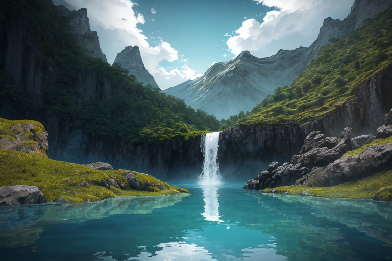
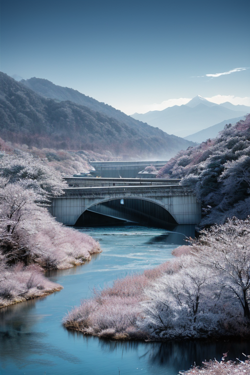
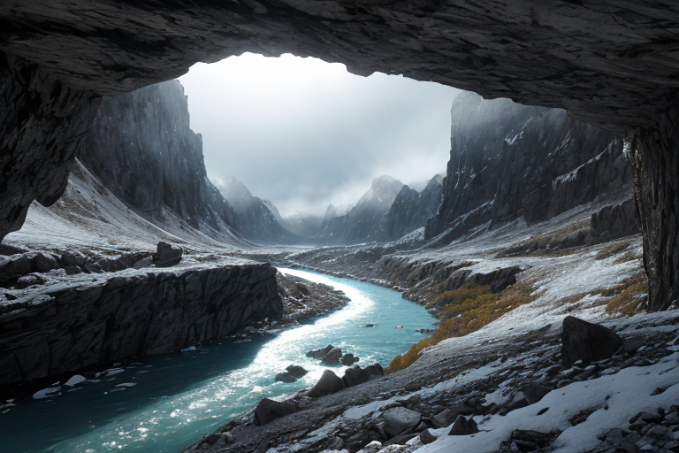
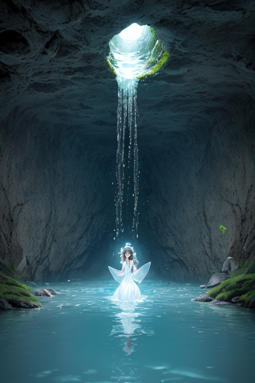
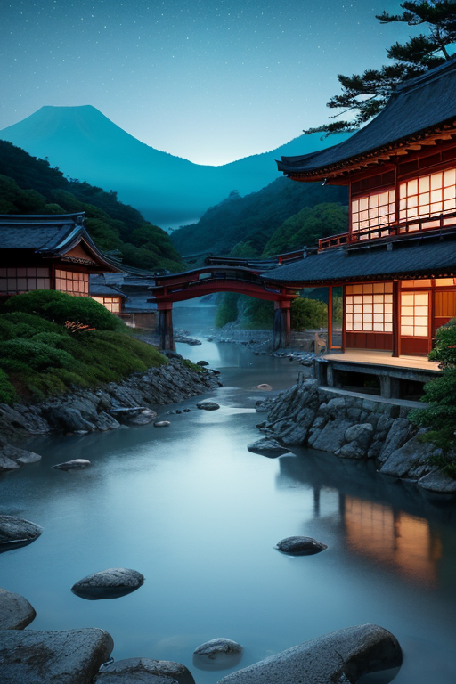

第一章 現実の富山
あなたはまだ気づいていない。この土地にも、王がいることを。
黒部ダムの巨大なコンクリート壁は、山肌を切り裂き、青く澄んだ水を湛えている。観光客のざわめきも、放流の轟音も、その全てを静かに飲み込む透明な水鏡。ここは、トヤマリア・アクアの王国、トヤマリア・アクアの心臓部だ。王はダム湖の最深部、光さえ届かぬ静謐な水底に立つ。その姿は水そのもの、完全な透明。彼は感情を持たぬ存在として、山から海へと流れる無数の水脈を感じ、その均衡を絶えず調整している。歪みの列島が震えれば、黒部の水はほんの少し粘度を増し、地盤の軋みを和らげる。富山湾に津波の兆しがあれば、湾内の水流を複雑に撹拌し、到達を数秒遅らせる。ただの調整。それだけだ。透明であるが故に、誰にも気づかれず、讃えられることもない。それがこの王の在り方だった。

第二章 歪みの兆候
立山連峰の万年雪が、今年は異様に早く黒ずんだ。トヤマリアは、雪解け水が地中深くへと急ぎすぎるのを感じた。それは単なる気候変動ではない。遥か昔、立山信仰が生まれた地質の「記憶」が、現代の工革という振動に共鳴し、歪みを増幅させ始めていた。北前船が富山湾にもたらした交易の波は、今やグローバルな物流の奔流となり、沿岸部の地盤に目に見えぬ圧力をかけ続けている。
五箇山の合掌造りは静かに佇むが、その梁には、かつてない種類の微細な軋みが蓄積されつつあった。トヤマリアは透明な指先で、黒部ダムの巨大なコンクリート壁に触れる。水脈を通じて伝わる地鳴りは、設計値の想定を僅かに超えていた。彼は無感情に、ダム湖の水分子の結合を一時的に強め、圧力に耐えるよう調整する。
誰も気づかない。透明であることは、介入の痕跡を残さない。しかし、この増大する歪みの前で、痕跡なき調整だけで足りるのか。純粋に真実のみを映す彼の内側に、初めて、曇りのような疑念が浮かんだ。

第三章 王の葛藤
立山連峰の雪解け水は、例年より早く、そして多かった。トヤマリアは、黒部川の水脈を司る妖精アクエリスと共に、増水する急流の均衡を保っていた。彼の調整は完璧に透明で、下流の町には、ただ「今年は水が豊かだ」という認識しか残さない。しかし、地中を流れる水脈の音は、不気味なうねりを帯び始めていた。これは自然の変動の域を超えている。地殻の歪みが、水脈そのものを変えようとしていた。
「止めるべきか、流すべきか」
透明王は、自らに問うた。歪みを無理に抑え込めば、別の場所により大きなひずみが生じるかもしれない。逆に、この流れに任せ、地形そのものを変革させれば、短期的な混乱は避けられない。彼の役割は微調整であり、変革の先導ではない。純粋な真実は、どちらにも等しく存在する。彼は初めて、選択という曇りに直面した。透明であることは、あらゆる可能性を映すがゆえに、決断を鈍らせる弱さでもあった。

第四章 妖精との対話
黒部ダムの巨大なコンクリート壁の内部、水脈の妖精アクエリスは、無数の導水管を流れる水の音に耳を澄ませていた。その透明な体は、水流の均衡そのもののように揺らいでいる。
「王よ、透明であることは、すべてを受け入れる器であることです」
アクエリスの声は、地下水脈を伝うように冷たく、澄んでいた。
「しかし器は、中身によって形を変えられはしません。この地の歪みは、器の形そのものを変えようとしています。北前船がもたらした変革の波、立山信仰が育んだ精神の地層、そして今、地底に蓄えられた力。これらはすべて、新しい地形を求める『意志』です」
タテヤミアが雪壁のように静かに口を開いた。
「水源を守るとは、流れを止めることではありません。時には、氷が解けて新たな流路を開くように、変革そのものを受け入れることも必要です」
透明王は、妖精たちの言葉に、自らの内なる曇りを感じた。彼らは、変革のリスクを熟知しながら、その必要性を語る。純粋な真実は一つではない。複数の真実がせめぎ合う時、透明であることは、あらゆる光を反射するがゆえに、自らの色を失う弱さでもある。彼は、自らが映し出すべき「色」を、初めて求め始めた。

第五章 微調整と余韻
黒部ダムの巨大なコンクリート壁は、新たな水脈の鼓動を静かに受け止めていた。透明王は、自らの内に生まれた「色」──工革という奔流を導くという決意──を手に、最後の微調整を行った。彼は、北前船が運んだ交易の知恵と、立山信仰が育んだ自然への畏れを、一滴の水に溶かし込んだ。それを、変革の奔流が最も激しく渦巻く一点へと落とした。
歴史の流れは、ほんのわずか、しかし決定的に曲がった。新たな水脈は、五箇山の合掌造りが佇む谷をかすめ、富山湾に注ぐルートを選んだ。これにより、かつての集落は水没を免れ、人々の記憶は地層に留められた。代償として、王の透明な身体に、消えない細かな亀裂が走った。彼は、自らの純粋さの一部を、この選択の「色」として永久に失った。
雨晴海岸から富山湾を望む。ホタルイカの群れが、夜の海に青い光の脈を描く。王は、自問に答えを見出した。透明であることは、あらゆる光を映す強さであると同時に、自らを傷つける脆さでもある。真の強さは、映すだけではなく、自らの内に生まれた一筋の色を、たとえそれが曇りであっても、引き受けることにある。
あなたの町にも、王がいる。